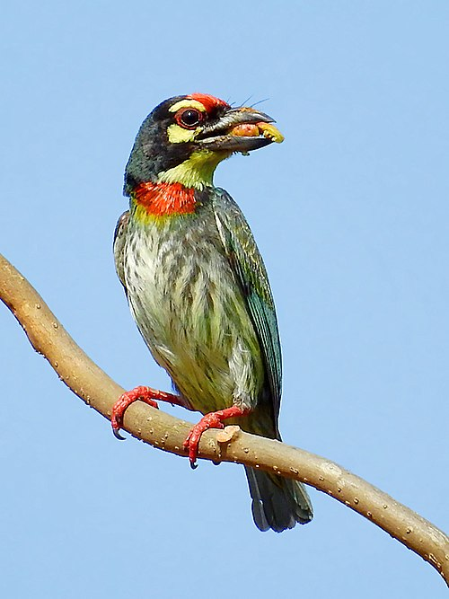

Coppersmith Barbet
About
The Coppersmith Barbet (Psilopogon haemacephalus) is a small, colorful bird found across the Indian subcontinent and Southeast Asia. It is named for its repetitive, metallic "tuk-tuk-tuk" call, reminiscent of a coppersmith striking metal.
Identification
- Bright green body with yellow throat and belly
- Red forehead and throat patch
- Stout bill and prominent eye ring
Habitat & Behavior
Commonly seen in gardens, groves, and urban parks, the Coppersmith Barbet feeds mainly on fruits and occasionally insects. It nests in tree cavities, often excavated by itself.